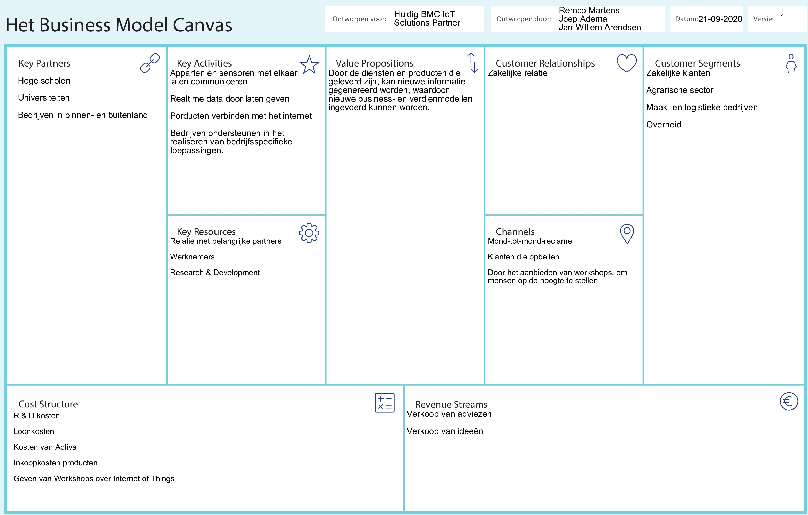
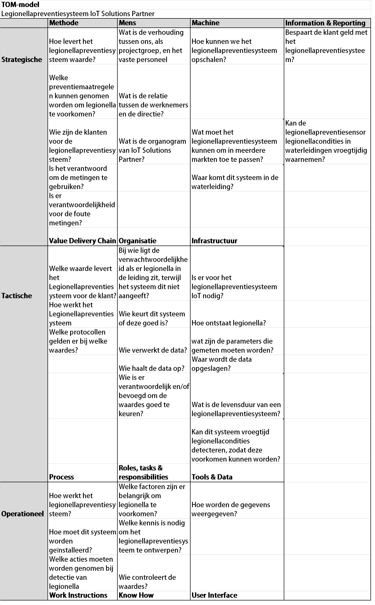
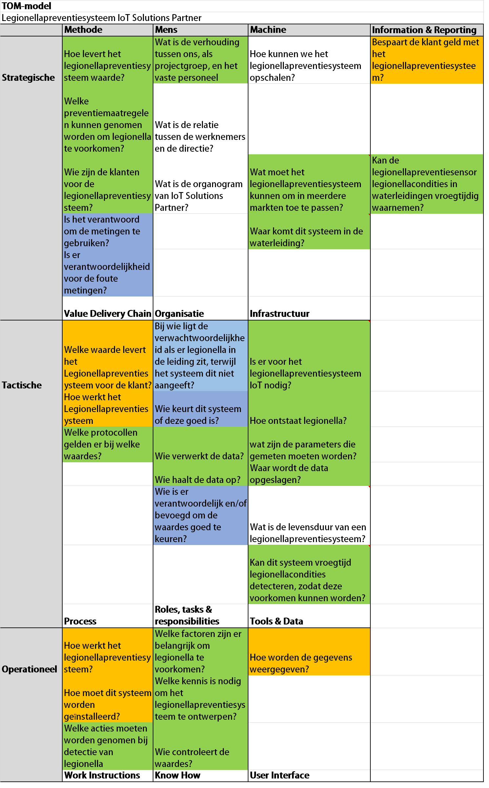
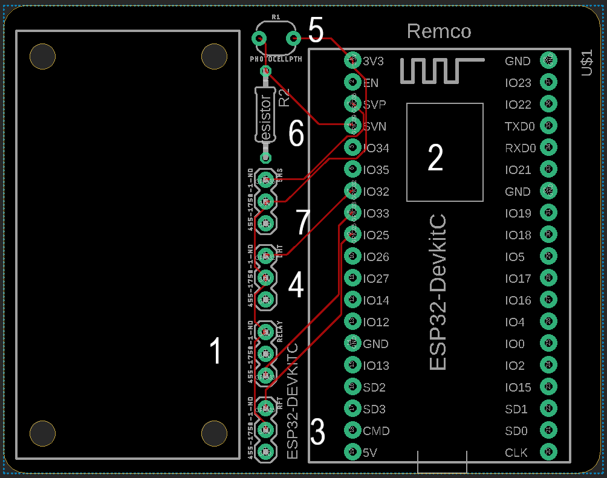
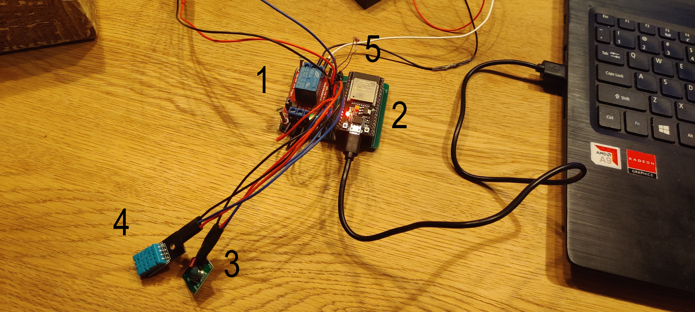

Portfolio van Remco
Mijn naam is Remco Martens en ik volg de minor Smart Industry.
Over mij

Mijn naam is Remco Martens en ik ben 22 jaar oud. Ik volg de opleiding Logistics Management aan de HAN in Nijmegen en zit in het vierde jaar. Bij logistiek denken mensen vooral aan vrachtwagens en het vervoeren van spullen. Deze zeer simplistische verwoording bevat een kern van waarheid, maar dekt zeker niet de volledige lading. Maar wat is logistiek dan wel? Welke processen vallen hieronder en welke systemen bestaan er om de logistiek te ondersteunen?
Logistiek is een verzamelterm voor alle benodigde processen die nodig zijn om een product uiteindelijk bij de consument te krijgen. Het logistieke proces begint bij het inkopen en vervoeren van de basale grondstoffen die nodig zijn voor de productie, tot aan de eindfase van het product, waarbij het fysieke product in bijvoorbeeld een winkel ligt. Binnen dit gehele traject (de supply chain) spelen organisatie, planning, vervoer en besturing cruciale rollen om het proces overzichtelijk en efficiënt te laten verlopen. Het is een wisselwerking om de beste prijs voor de klant te kunnen bieden, zonder dat de totale kosten van het product de pan uit rijzen. Een fragiele balans tussen kosten en klanttevredenheid.
Ik heb minor Smart Industry gekozen omdat meer wilde leren over de technologische kant van het bedrijfsleven en de nieuwe ontwikkelingen op technologisch gebied. Ik wilde dit leren zodat ik later in het bedrijfsleven een stukje kennis heb over de technologie die zich in het bedrijf bevindt. Zo kan ik beter communiceren met ICT-ers en andere technische beroepen, zo kunnen we elkaar beter begrijpen en helpen.
Ik vond vroeger al de technologie interessant en dat is eigenlijk nooit weggegaan. Ik was altijd wel verbaast van de nieuwe innovaties en ontwikkelingen die werden gedaan. Maar om hier later ook iets mee te gaan leek mij lastig omdat ik het voor mij lastig was om het allemaal te begrijpen. Daarom leek mij een minor die hier overgaat de perfecte oplossing.
Ik wist niet goed wat ik van de start van de minor moest verwachten, mede door corona. Ik vond het daarom fijn dat we in het begin op locatie in Wijchen les hadden, hier heb ik dan ook veel aangehad. Ik vond het in het begin wel lastig om te volgen wat er precies verwacht werd dat op het einde opgeleverd werd. Doordat ik dit in het begin niet meteen duidelijk heb gemaakt ben ik daardoor later in de minor mezelf weer tegen gekomen. Dit is dan ook een leerpunt dat ik zeker mee zal nemen.
Het project wat we met een groepje moesten doen is mij goed bevallen. In het begin was het voor mij zoeken wat het eindresultaat moest worden en hoe we het gingen aanpakken. Door een planning te maken en de onderdelen te verdelen was het voor mij een stuk duidelijker wat er verwacht werd en wie wat ging doen. Voor het project moesten we een Legionellapreventiesysteem maken, dit systeem geeft dan aan wanneer er mogelijk legionella is ontstaan in het water. We begonnen aan het project met 3 personen, helaas stopte Joep met de minor hierdoor waren Jan-Willen en ik nog met z’n tweeën over. Gelukkig kregen we hulp van Derk, hij zat bij een ander groepje maar wilde ons graag helpen met het programmeren van ons Legionellapreventiesysteem. Hier zijn we Derk dan ook heel dankbaar voor. Iot Solutions Partner was ook heel tevreden over het eindresultaat van het project. Het Legionellapreventiesysteem dat is ontwikkeld tijdens het project is nu in verdere ontwikkeling bij IoT Solutions Partner en ze hebben al klanten die het product willen kopen. Hier ben ik dan ook heel tevreden over.
Voor dat aan deze minor begon wist ik niet hoe ik moest programmeren of hoe ik een website moest bouwen. De lessen die we hebben gehad vond ik interessant en leerzaam hier heb dan ook veel aangehad. Het bouwen van dit portfolio is me gelukt met wat hulp van mijn medestudenten omdat ik zelf af en toe niet uitkwam, hier ben ik ze dank ook dankbaar voor. Het programmeren van het Plantwater systeem vond ik ook lastig hiervoor heb ik ook hulp gevraagd aan mijn medestudenten. Ik vond het in het begin moeilijk om aan anderen hulp te vragen maar dit ging later in de minor steeds beter, dit is dan ook een leerpunt waar ik nog aan moet werken. Over het algemeen vond ik dat de minor minder aansluiting had met mijn opleiding dan ik had verwacht. Ik denk dat dit ook een reden is waardoor het voor mij soms lastig was om het allemaal te begrijpen. Ik vond deze minor een leuke en unieke ervaring, hier zal ik dan nog vaak tevreden naar terug kijken.
Smart Industry

Smart products Smart products zijn objecten die data kunnen verwerken en bieden interactieve functionaliteit. en smart product combineert de fysieke en software interfaces.
Servitization Servitization wil zeggen dat bedrijven een dienst verlenen met behulp van hun producten in plaats van dat ze de producten verkopen.
Digital factory Digital factories zijn bedrijven die voornamelijk door IT-processen worden gedreven en integreren oplossingen tussen machines en mensen. Dit zou de groei van een bedrijf kunnen stimuleren, maar ook kosten kunnen verlagen en de kwaliteit kunnen verhogen.
Connected factories Connected factories zijn fabrieken die gebruik maken van sensoren en de cloud om historische en real-time data te analyseren van hun machines en processen.
Sustainable factory De uitdagingen van een sustainable factory zijn het limiteren van energieverspilling, het behouden van natuurlijke middelen, de gevolgen op het millieu beperken en nog veel meer.
Smart working Smart working is een werkmodel dat nieuwe technologieën en het ontwikkelen van bestaande technologieën inzet om de resultaten en tevredenheid op het werk te verbeteren.
Advanced manufacturing Advanced manufacturing is het inzetten van innovatieve technologieën en methodes voor verhoogd concurrentievermogen in de maakindustrie.
Flexible manufacturing Flexible manufacturing is een productiemethode waarmee dynamisch kan worden geconfigureerd welke producten worden geproduceerd. Ook de hoeveelheid producten kan gemakkelijk worden aangepast. Door de flexibiliteit kan de efficiëntie worden verhoogd en daardoor zijn productiekosten lager.
Manufacturing technologies Denk aan technologieën als 3D-printen, het inzetten van robots die gekoppeld zijn aan computersystemen en nog veel meer.
Network centric Met behulp van netwerken kan informatie gemakkelijk worden gedeeld met derden. Denk hierbij aan mensen die informatie kunnen delen, maar ook aan machines met behulp van sensoren.
Digitization Digitization is een proces waarin bepaalde zaken steeds meer met computers worden geregeld. Denk bijvoorbeeld aan een planningsysteem. Dit werd eerder altijd op papier gedaan, maar tegenwoordig zijn er computersystemen waarmee je gemakkelijk een planning kunt maken.
Introductie projectVoor het tweede deel van de minor is een project uitgevoerd voor het bedrijf IoT Solutions Partner. De opdracht was om een systeem te ontwerpen dat de condities kan waarnemen waarbij mogelijk legionella kan ontstaan en hiervoor dan een waarschuwing geeft. Het systeem wordt ook wel een Legionellapreventiesysteem genoemt. Daarnaast moest ook onderzocht worden of de markt interesse had in dit systeem en hoeveel het systeem zou kosten.
Smart Start
Hier zijn de artikelen voor het onderdeel Smart Start weergegegven. Het eerste artikel gaat over de kruispunten tussen de opleiding die ik momenteel volg en de minor Smart Industry. Het tweede artikel is een opdracht vanuit Smart Start om via een casus te onderzoeken wat Smart Industry betekent in de termen Lean en Agile. Hierin worden eerst de methode en de begrippen Lean en Agile uitgelegd. Vervolgens is een filmpje te zien met daaronder een casus berschrijving. Het laatste onderdeel van Smart Start is het onderzoek naar de Volwassenheid van IoT Solutions Partner. Hierbij is eerst kort de theorie uitgelegt en daarna een SWOT-analyse opgesteld. Na de SWOT-analyse wordt de confrontatiematrix weergegeven en de volwassenheid van IoT Solutions Partner beschreven.
In deze blog ga ik de kruispunten behandelen tussen mijn studie Logistics Management en de minor Smart Industry. Ik heb een kort literatuuronderzoek gedaan naar de behandelde thema’s van Smart Industry. De thema’s zijn: Smart Products, Servitization, Digital Factory, Connected Factory, Sustainable Factory en Flexible Manufacturing.
Het eerste onderwerp dat een relatie heeft met logistiek is, Smart Products. Een voorbeeld van een smart product dat wordt gebruikt in de logistiek bij bepaalde bedrijven is RFID. RFID wordt gebruikt om pallets of producten te lokaliseren in een distributiecentrum. Andere smart products die gebruikt worden zijn bijvoorbeeld drones en google glasses. De drones worden gebruikt om de voorraad te inspecteren en de google glasses om te order picken. Het tweede onderwerp wat voor komt in de logistiek is Servitization. Een voorbeeld hiervan is de select service van Bol.com, hierbij sluit je een abonnement af waardoor je je pakketjes eerder in huis kunt hebben dan normaal. In de logistieke tak staan vaak de heftrucks en andere machines die gebruikt worden onder service van de leverancier.
Digital Factory is ook een onderwerp dat voor komt in de logistiek, denk hierbij aan de warehouse management systemen (SAP) die zorgen voor koppeling tussen meerdere verschillende systemen. Met behulp van zo’n systeem is de data overzichtelijk en up to date weergegeven. Het onderwerp Connected Factories sluit hier mooi op aan. Het warehouse management systeem kan ook gekoppeld worden met andere fabrieken en magazijnen. Hierdoor ontstaat er een overzicht van de totale voorraad van de producten en waar deze zich bevinden.
Echte duurzame fabrieken komen nog weinig voor in de logistieke wereld. Sommige hebben wel hun dak vol liggen met zonnepanelen, kijk bijvoorbeeld naar het warehouse van LIDL. Maar er zijn nog weinig industie gebieden waar efficiënt gebruik worden gemaakt van elkaars ‘afval’ zoals de warmte die vrij komt bij een productiebedrijf kan een ander bedrijf gebruiken voor de verwarming van het gebouw. Het onderwerp Flexible Manufacturing komt ook voor in de logistiek. Door bijvoorbeeld dezelfde onderdelen te gebruiken in verschillende producten om de productie kosten te minderen en de voorraad te beperken.
Kijkend naar de behandelde onderwerpen zijn er een aantal kruispunten tussen de minor Smart Industry en mijn opleiding Logistics Management. Deze overlap zal dus bijdragen aan het voltooien van de minor.
Introductie
Vanuit Smart Start is de opdacht om via een casus een onderzoek te houden om te kunnen illustreren wat Smart Industry betekent in termen van Lean en Agile. Dit onderzoek richt zich op de relaties tussen industrie 4.0 en lean productie.
Methode
De zoekstrategie die ik gebruik om aan de informatie te komen is, door op verschillende sites te zoeken die wetenschappelijke artikelen plaatsen. Voorbeelden hiervan zijn: Google Scholar en HAN Studiecentra. Voor het zoeken naar informatie zijn er eerst een aantal zoektermen opgeschreven. Vervolgens is er naar de genoteerde zoektermen gezocht. Tijdens het zoeken is er rekening gehouden met de actualiteit en de betrouwbaarheid van de bronnen. Om naar literatuur over Lean binnen de Smart Industry te vinden, zal ik op "lean" in combinatie met "industry 4.0" zoeken. Ik zal hierbij proberen te zoeken naar de meest recente relevante bronnen.
Lean
Lean heeft vijf principes die elkaar aanvullen en samen naar perfectie streven. De vijf principes zijn:
- (Klant)waarde: de waarde van een product of dienst wordt bepaalt door de klant.
- Waardestroom: je bekijkt het proces dat er voor zorgt dat het product uiteindelijk bij de klant staat. Lean focust op het elimineren van niet waarde toevoegende activiteiten.
- Flow: de waarde moet op een gelijkmatige en ongebroken manier door het proces stromen. Door de gelijkmatige verdeling is er nergens overbelasting.
- Pull: de vraag van de klant is bepalend voor het inzetten van de productie of dienst.
- Perfectie: alle medewerkers zijn voortdurend bezig met het verbeteren van het proces. (Hoek, Koopmans, & Nieuwland, 2017)
Agile
Bij agile gaat het erom dat je een wendbare organisatie bent. Er zijn hierbij vier kenmerken van toepassing:
- Flexibele strategie: de wereld verandert snel, dus het is belangrijk om flexibel om te gaan met deze veranderingen. Op gebied van smart industry verandert er momenteel heel veel en het is voor organisaties belangrijk om hier in mee te gaan.
- Multidisciplinaire teams: een organisatie bestaat uit teams die meerdere disciplines beheersen en elkaar aanvullen voor een zo goed mogelijke samenwerking.
- Korte cycli: de organisatie wil in een korte tijd waarde voor zijn klanten realiseren. Deze tijd varieert van één tot drie weken. Hierbij is het geven van feedback belangrijk.
- Visueel werken: het is belangrijk om de voortgang van een project zichtbaar te maken. Dit wordt bijvoorbeeld door middel van een dashboard gedaan.
Om tot betere inzichten over de relatie tussen lean, agile en smart industry te komen wordt er in het verzamelde kennismateriaal ook onderzoek gedaan door enquêtes en een casestudy. Een voorbeeld hiervan is uit het onderzoek van Matteo Rossini, hier wordt door middel van een enquête aan fabrikanten gevraagd naar het niveau waarop zij Lean, agile en smart industry hebben geïmplementeerd. De resultaten van deze enquête kunnen worden gerangschikt om op deze manier duidelijk te maken hoe een bedrijf presteert op de verschillende categorieën. Voorbeelden van deze categorieën zijn bijvoorbeeld het gebruik van IoT, AI, machine learning en in hoeverre een organisatie actueel informatie en data deelt met klanten en partners. Dit is gedaan op een schaal van 1 tot 5, waarbij 1 er geen gebruik werd gemaakt van een techniek en bij deze volledig was geïmplementeerd. Aan de hand van deze scores kan worden vergeleken of er een relatie is tussen de smart industry en agile en lean.
Casus
Om bovenstaande literatuur verder te illustreren is er gezocht naar een bijpassende casus. Deze is te vinden in bovenstaande video. In dit voorbeeld wordt de toepassing van industrie 4.0 binnen een productiefaciliteit van Bosch Rexroth toegelicht. Om te beginnen is in de video te zien hoe industrie 4.0 en in het bijzonder IoT zorgen voor een productie die meer agile is. Zo kunnen klantwensen eerder terecht komen bij de fabrikant en er kan dus sneller worden ingespeeld op deze specifieke klant wensen. Daarnaast zijn er ook nog een aantal lean principes terug te zien in de casus. Zo wordt er vertelt dat wanneer de productie bij een van de machines tegen een probleem aan loopt, krijgt een medewerker een seintje hiervan zodat deze kan ingrijpen om te voorkomen dat er te veel verspild wordt. Dit menselijk handelen bij een fout die optreedt in het productieproces sluit goed aan bij lean. Ook is te zien hoe Bosch Rexroth op een aantal belangrijke beoordelingscriteria, die naar voren kwamen uit het eerdere literatuuronderzoek goed scoort. Kortom er is goed te zien hoe lean en agile nog steeds van betekenis zijn binnen Smart Industry (Rexroth, 2016).
Introductie
Voor het vak Smart Start is de mate van volwassenheid van IoT Solutions Partner beschreven aan de hand van een SWOT analyse. Als eerste wordt de SWOT methode uitgelegd, daarna wordt deze methode toegepast op IoT Solutions Partner.
Theorie SWOT
SWOT staat voor de Engelse termen Strengths, Weaknesses, Opportunities en Threats. In een SWOT-analyse koppel je de sterktes en zwaktes van een organisatie aan de kansen en bedreigingen in de markt. Met behulp van dit marketingmodel kan later een goede marketingstrategie bepaald worden. De SWOT-analyse is dus eigenlijk het kloppende hart van het strategisch marketingplan (Van der Linde, 2012).
Sterktes en zwaktes komen voort uit de ‘interne analyse’: ze hebben betrekking op het merk of de onderneming waarvoor het strategisch marketingplan wordt gemaakt. Deze zet je af tegen de kansen en bedreigingen, vanuit de zogenoemde ‘externe analyse’. Deze externe factoren hebben betrekking op de markt of de omgeving en zouden ook bestaan als het bedrijf er niet zou zijn (Van der Linde, 2012).
Interne analyse
De interne analyse van het strategisch marketingplan wordt uitgevoerd op ‘micro niveau’; binnen het bedrijf zelf. De interne analyse is eigenlijk een evaluatie van de behaalde resultaten van de marketingstrategie tot nu toe, zodat je weet waar de onderneming staat. De interne analyse bevat onderzoek naar de volgende componenten:
- Waardeketen
- Marketing
- Afnemers
- Financiën
- Organisatie
Externe analyse
De externe analyse van het strategisch marketingplan wordt uitgevoerd op ‘meso niveau’ en ‘macro niveau’. Het meso niveau omvat de gehele bedrijfstak of branche. Het macro niveau gaat een stapje verder; hierbij onderzoek je de gehele markt. Kortom; alle externe factoren buiten de onderneming worden onder de loep genomen. Bij de externe analyse onderzoek je de volgende componenten:
- Macro omgeving
- Brance
- Afnemers
- Concurrentie
- Distributie

Confrontatiematrix
De SWOT-analyse is onlosmakelijk verbonden met de confrontatiematrix. Deze matrix ‘confronteert’ de belangrijkste sterktes en zwaktes van de onderneming met de meest belangrijke kansen en bedreigingen uit de markt. In de confrontatiematrix kun je aflezen hoe de aansluiting is tussen de organisatie en de markt (Van der Linde, 2012). Bij de confrontatiematrix worden de sterktes en zwaktes van de organisatie geconfronteerd de kansen en bedreigingen in de markt. Hiervoor worden steeds de volgende vragen gesteld:
- Stelt deze sterkte de organisatie in staat om deze kans te benutten?
- Stelt deze sterkte de organisatie in staat om deze bedreiging te weren?
- Verhindert deze zwakte de organisatie om deze kans te benutten?
- Verhindert deze zwakte de organisatie om deze bedreiging te weren?

Volwassenheid IoT Solutions Partner
Hieronder is een SWOT-analyse en confrontatiematrix weergegeven over IoT Solutions Partner. In de SWOT-analyse zijn per onderdeel drie punten weergegeven die betrekking hebben op de interne en externe omgeving van IoT Solutions Partner. Deze punten zijn met elkaar geconfronteerd in de confrontatiematrix. In onderstaande matrix is te zien dan de sterke punten de kansen ondersteunen en de bedreigingen kunnen weren. De zwakken punten verhinderen de mogelijkheden om de kansen te benutten en de bedreigingen te weren. IoT Solutions Partner zal dus haar zwaktes moeten verminderen om de mogelijke kansen te benutten en de bedreigingen te kunnen weren. Hierbij rekening houdend dat deze confrontatiematrix een aanname is van de huidige situatie van IoT Solutions Partner.
Smart Business
Hier zijn de artikelen voor het ondereel Smart Business weergegeven. Het eerste artikel gaat over het Businessmodel Canvas. Hierin wordt het BMC uitgelegd en wordt het toegepast op het bedrijf Iot Solutions Partner. Het tweede artikel gaat over de Businesscase van het Legionellapreventiesysteem. Hierbij wordt verwezen naar het rapport legionellapreventiesysteem. Daarnaast worden de kosten en baten van het systeem beschreven. De afbeelding die te zien is in het artikel is een 3D-ontwerp van de beugel die gebruikt wordt voor het systeem. Als laatste is er ook een verwachte kostenbaten-analyse weergegeven voor een recreatiebedrijf met 100 accomodaties.
Introductie
Aan de hand van de gastles, gegeven door Geert Rensen van Beinformed in les 2, zie Reflectie SMART-business les 2, is er door onze projectgroep een Businessmodel Canvas (BMC) voor het bedrijf IoT Solutions Partner gemaakt. De projectgroep bestaat uit Joep Adema, Jan-Willem Arendsen en Remco Martens.
Businessmodel Canvas
Hieronder is een filmpje te zien over het Businessmodel Canvas. Het model bestaat uit de vier hoofdgebieden van een onderneming. Deze gebieden zijn verdeeld in negen onderdelen, die laten de logica zien van hoe een bedrijf geld wil verdienen. Hieronder zijn de hoofdgebieden en onderdelen overzichtelijk weergegeven:
- klanten
- Klantsegmenten
- Kanalen
- Klantrelaties
- Aanbod
- Waardepropositie
- Infrastructuur
- Kernactiviteiten
- Mensen en middelen
- Strategische partners
- Financiële levensvatbaarheid
- Inkomstenstromen
- Kostenstructuur
Wij hebben met ons groepje een BMC gemaakt voor het bedrijf IoT Solutions Partner. Deze BMC is als oefening ingevuld tijdens de workshop van Paul Kalis over het TOM-model. In de afbeelding hieronder is de ingevulde BMC te zien voor het bedrijf IoT Solutions Partner.

Businessmodel Canvas voor IoT Solutions Partner
De informatie die gebruikt is om deze BMC in te vullen, komen van de website van IoT Solutions Partner. Op deze website stond dat belangrijke partners voor dit bedrijf Hogescholen, universiteiten en bedrijven in het binnen- en buitenland zijn. De kernactiviteiten van IoT Solutions Partner zijn, apparaten en sensoren met elkaar laten communiceren, realtime data doorgeven, producten met het internet verbinden en bedrijven ondersteunen in het realiseren van bedrijfsspecifieke toepassingen. De waardeproposities van IoT Solutions Partner zijn om nieuwe informatie te generen, door de diensten en producten die geleverd zijn, waardoor nieuwe business- en verdienmodellen ingevoerd kunnen worden. Er zijn alleen zakelijke klanten. De kanalen om de klanten te bereiken gaan via mond-tot-mondreclame, klanten die hen opbellen en door het aanbieden van workshops, om mensen op de hoogte te houden over Internet of Things. De klantensegmenten zijn zakelijke klanten uit vooral de agrarische sector, de maakindustrie, logistieke bedrijven en de overheid. De kosten die IoT Solutions Partner maakt hebben vooral betrekking op R&D kosten (Research en Development), loonkosten, kosten van activa, inkoopkosten van producten en de kosten voor het geven van de workshops. De inkomststromen zijn de verkoop van adviezen en de verkoop van ideeën. IoT Solutions Partner verkoopt namelijk geen serie producten. Wanneer een product succesvol verkocht kan worden, wordt dit door een andere B.V. gedaan (Iot Solutions Partner, zd).
Introductie
Op 2 oktober 2020 hadden wij in de minor voor het vak Smart Business een workshop over het TOM-model van Paul Kalis. Aan de hand van deze workshop is er een TOM-model opgesteld voor het bedrijf IoT-Solutions Partner. Tijdens het project waren er meerdere interventies. Bij elke interventie werd er aandacht besteed aan een onderdeel voor je portfolio. In de vierde interventie op 17 december 2020 ging er een gedeelte over Smart Business. Een opdracht was om een gedeelte van Smart Business te bekijken om daar vervolgens kort over te kunnen presenteren. Wij als groepje hebben er toen voor gekozen om het opgestelde TOM-model te evalueren tijdens deze interventie.
TOM-model
TOM staat voor Target Operating Model. Dit model is ontwikkeld om op een snelle manier inzicht te krijgen in operationele organisaties. Ook kan met dit model tot een efficiënt ontwerp en ontwikkeling van organisaties komen. Men gaat er bij dit model vanuit dat een organisatie bestaat uit een samenwerking tussen mens, machine en methode. Deze samenwerking gaat over drie niveaus, namelijk bedrijfsstrategie, tactische aansturing en operationele uitvoering. Voor een optimaal operationele levering, overlappen deze negen domeinen met elkaar. Alle vlakken en alle niveaus hebben invloed op elkaar, waardoor ze elkaar of versterken of tegenwerken. Met het model worden relaties snel inzichtelijk gemaakt en kunnen omissies worden gedetecteerd en voorzien met passende oplossingsvoorstellen.
TOM-model IoT Solutions Partner
Vervolgens werd in de les een voorbeeld van TOM besproken. Hierna werd er als opdracht meegegeven om als groepje de TOM in te vullen voor je projectgroep. Hieruit is het model als volgt ingevuld voor IoT Solutions Partner, zie de afbeelding hieronder.

Eerst wordt de kolom Methode besproken. Links Bovenin bij Value delivery chain gaan de vragen over hoe het LPS waarde levert, wie de klanten zijn, welke maatregelen er genomen moeten worden en wie er verantwoordelijk is voor de metingen. Vervolgens bij Process gaat het over wat de waarde van de klant is, welke protocollen er gelden en hoe het LPS werkt. Bij Work Instructions gaat het over het LPS. Over hoe dit systeem moet worden geïnstalleerd, hoe het systeem werkt en welke acties er genomen moeten worden voor de detectie van Legionella.
De tweede kolom, de mens gaat over de organisatie, de rollen, taken en verantwoordelijkheden en de kennis. De vragen bij de organisatie gaan vooral over IoT Solutions Partner zelf. Wat is de verhouding tussen het personeel en wij als projectgroep en tussen het personeel en de directie. Ook is een vraag hoe de organogram van IoT Solutions Partner er uit ziet. Bij de rollen, taken en verantwoordelijkheden, gaan de vragen vooral over bij wie de verantwoordelijkheid ligt van de waarden, wie het systeem keurt, wie de data verwerkt, wie de data ophaalt en wie er verantwoordelijk is om de waardes te keuren. Bij kennis gaat het over welke factoren er belangrijk zijn om legionella te voorkomen, welke kennis er voor het ontwerpen van het LPS nodig is en wie de waardes controleert.
De kolom machine bestaat uit de onderdelen infrastructuur, hulpmiddelen en data en het weergeven van de data. Bij infrastructuur zijn de vragen gebaseerd op hoe het LPS opgeschaald kan worden, waar dit systeem in de waterleiding komt en wat het LPS moet kunnen om in meerdere markten toe gepast te kunnen worden. Bij hulpmiddelen en data gaan de vragen over hoe Legionella ontstaat, wat de parameters zijn die gemeten moeten worden, waar de data opgeslagen moet worden, wat de levensduur is, of dit systeem vroegtijds legionella kan detecteren en of er Internet of Things nodig is voor de oplossing. Bij het weergeven van de data, User Interface, wordt de vraag gesteld hoe de gegevens moeten worden weergegeven. Bij het laatste, verticale, kopje Information & Reporting gaat het over hoe de klant geld bespaart met het LPS en of het LPS legionellacondities in waterleidingen vroegtijdig kan waarnemen.
Evaluatie TOM-model IoT Solutions Partner
Het huidige TOM-model, die in de afbeelding hierboven is weergegeven is geëvalueerd. Dit is gedaan door bij elke vraag te bekijken of de vraag beantwoord is (groen) of waren wij op dat moment nog bezig om de vraag te beantwoorden (oranje). Wanneer de vraag niet beantwoord wordt tijdens de minor, is de vraag wit gekleurd. Op de blauwe vragen hebben wij wel een antwoord gevonden, maar hier kunnen wij met ons systeem niet veranderen. Wat opviel is dat de meeste vragen beantwoord zijn of dat we bezig zijn om de vraag te beantwoorden. Dat vond ik zeer interessant en had ik niet verwacht. Dit model is namelijk nog steeds van toepassing en heeft qua inhoud geen update nodig. In de onderstaande afbeelding is het geëvalueerde TOM-model te zien.

De vragen die beantwoord zijn hebben voornamelijk betrekking op het uitgevoerde marktonderzoek. Hierin is naar voren gekomen hoe het Legionellapreventiesysteem (LPS) waarde gaat leveren en wie de klanten zijn voor dit systeem, welke preventiemaatregelen genomen kunnen worden, wat het systeem moet kunnen om in meerdere markten toe te passen, hoe legionella ontstaat en wat de parameters zijn die gemeten moeten worden, welke acties moeten worden genomen bij detectie van legionella, wie de waardes controleert, etc. Op het moment van schrijven zijn wij niet bezig geweest met of de klant geld bespaart met het legionellapreventiesysteem. Wel hebben wij een indicatie in ons rapport wat per markt een gemiddeld bedrijf kwijt is aan legionellapreventie en weten wij wat het legionellapreventiesysteem ongeveer gaat kosten, vandaar dat deze vraag oranje is gekleurd. De bovenstaande vragen worden allemaal beantwoord in het eindrapport over ons legionellapreventiesysteem.
Er is geen onderzoek gedaan naar hoe de waardes weergegeven worden. Wel weten wij in welk programma de waardes weergegeven worden. Omdat het om relatief weinig informatie gaat, wordt de informatie zonder model of theorie weergegeven. Het weergeven van de data wordt gedaan in het programma Allthingstalk. Dit programma kan namelijk de data die via LoRa binnen komt weergeven.
De vragen die bij Organisatie staan, hebben vooral betrekking op onze ervaring. Wij vinden dat de verhouding tussen ons en het vaste personeel vooral indirect is. Wanneer wij hulp nodig hebben, kunnen wij een bericht via Whatsapp sturen. Deze wordt vaak binnen een kwartier door Pieter Hoenderken beantwoord. In een paar gevallen hadden wij een collega nodig. Deze collega werd dan in onze groepsapp geplaatst, om zo aan hem de vragen te stellen, zodat iedereen op de hoogte is van deze vragen. Deze collega reageerde zeer snel en gaf ons veel en goede informatie om verder te kunnen met het project. De relatie tussen de werknemers en de directie weten wij niet, omdat wij slechts één keer bij IoT Solution Partners geweest zijn. Tijdens dit kennismakingsgesprek was er geen personeel aanwezig. Wel werd gezegd dat het personeel thuis mocht werken wanneer zij wilden, maar dat zij ook op locatie mochten werken.
De blauwe vragen gaan vooral over de verantwoordelijkheid, bij wie deze verantwoordelijkheid ligt, wie het systeem keurt, wie er verantwoordelijk en/of bevoegd is om de waardes te keuren. Dit is ingewikkeld. Tijdens ons marktonderzoek kwam er naar voren dat in een aantal markten bedrijven verplicht zijn om via een onafhankelijke bacterioloog periodiek metingen te laten uitvoeren. Daarnaast moet er zelf een logboek bijgehouden worden, waarbij ook leidingen doorgespoeld moeten worden. Ons systeem richt zich vooral op dat logboek en het doorspoelen. Ons systeem geeft een melding bij een conditie waarin legionella goed kan groeien, niet wanneer legionella werkelijk gedetecteerd wordt. Het detecteren van legionella kan alleen in een laboratorium, niet met een sensor. Vandaar dat deze vragen blauw zijn, want dit wordt alsnog beoordeeld door een onafhankelijke bacterioloog, ook al wordt ons systeem toegepast.
Op de witte vragen hebben wij geen antwoord. Dit komt voornamelijk, omdat wij ons hier nog niet op gericht hebben en dit in eerste instantie geen onderdeel van ons onderzoek is. Wij hebben ons niet gericht op hoe wij het legionellapreventiesysteem kunnen opschalen, omdat IoT Solutions Partner vooral een Research & Developmentbedrijf is. Hierbij gaan wij ervan uit dat met het opschalen van het Legionellapreventiesysteem het fabriceren in een fabriek of iets dergelijks wordt bedoeld.
In dit artikel worden de kosten en baten van het Legionellapreventiesysteem (LPS) beschreven. Heeft u interesse in het uitgebreide marktonderzoek, dan verwijs ik u naar het Rapport Legionellapreventiesysteem.
Kosten Legionellapreventiesysteem
De prijs van het legionellapreventiesysteem (LPS) bestaat uit de kosten van het materiaal. De materiaalkosten van het LPS bestaat uit het volgende:
- Watermeter;
- Temperatuursensor;
- Inductievesensor;
- Minicomputer;
- Ge3d-printte onderdelen;
- Bedrading;
- Breadbord.
Baten
Het systeem kan eenvoudig gemonteerd worden op de huidige installatie. In elke installatie zit een watermeter. Het grootste verschil is dat er van een normale watermeter een ‘’slimme’’ watermeter gemaakt wordt. Dit wordt gedaan door sensoren op de watermeter te monteren. Het systeem hoeft dus niet aangepast te worden, want alleen de watermeter krijgt een update. De kosten voor één LPS voor een watermeter zijn ongeveer € 60. Het grootste verschil tussen de verschillende bedrijven is dat zij waarschijnlijk verschillende watermeters gebruiken. Vandaar dat er per watermeter een beugel ontworpen moet worden. In de afbeelding hieronder kan een voorbeeld van een ontworpen beugel voor een watermeter gezien worden. De gefabriceerde prijs per beugel zal niet veel verschillen, omdat deze qua inhoud ongeveer dezelfde grootte hebben. Het systeem aanpassen is dus een relatief kleine moeite.

Wanneer eenmaal de watermeter is aangepast voor een Legionellapreventiesysteem (LPS), kan het analoge logboek worden aangepast naar een digitaal logboek. Dit houdt in dat er niet meer standaard gespoeld hoeft te worden, maar dat het systeem een melding geeft welke leidingen er doorgespoeld moeten worden. Tevens wordt het logboek digitaal gemaakt en worden de waardes gelijk op het logboek genoteerd. Door deze maatregelen worden er veel werkuren bespaard. Ook wordt er veel water en energie bespaard, omdat er niet onnodig warm water doorgespoeld moet worden. De kosten die dit per markt oplevert heeft u kunnen lezen in de jaarlijkse kosten legionellapreventie. Verwacht wordt dat het LPS de indirecte kosten zal verlagen met 25% dit is een schatting en dus niet te garanderen.
Verwacht wordt dat een gemiddelde recreatiebedrijf of zorggroep interesse heeft in een Legionellapreventiesysteem, omdat zij relatief veel werk en kosten hebben om aan het legionellabeheersplan te voldoen. Ook is het bij deze bedrijven zo dat als zij veel legionella in de leiding hebben, omdat dit uit de waardes van de onafhankelijke bacterioloog naar voren komt. Dit geldt vooral voor de grotere campings. Bij de tuincentra wordt verwacht dat zij dit nog niet als dusdanig groot probleem zien om zo’n systeem te gebruiken, omdat beweerd wordt dat dit geen groot probleem is.
Door het gebruik van een LPS blijven er tevens kosten voor legionellapreventie aanwezig, omdat de overheid metingen van een onafhankelijke bacterioloog eist en dat de risicoanalyse om een aantal jaar geüpdatet moet worden. Wij denken dat ondanks dat de ‘’directe kosten’’ voor legionellapreventie met ons systeem niet weggenomen worden, dat er nog steeds vraag is voor een Legionellapreventiesysteem bij de recreatie en de zorginstellingen, omdat zij dagelijks bezig zijn met het (onnodig) doorspoelen van waterleidingen. Door dit systeem zou hier veel tijd mee bespaard kunnen worden, omdat hierdoor het logboek digitaal gemaakt wordt en omdat dit systeem aangeeft wanneer er gespoeld moet worden, kan een groot gedeelte van de indirecte jaarlijkse kosten voor legionellapreventie weggenomen worden. Omdat het updaten van een watermeter ongeveer € 60 gaat kosten, wordt verwacht dat dit aantrekkelijk is voor de twee bovenstaande markten, waardoor de drempel om dit systeem te nemen laag is.
In onderstaande tabel is een verwachte kostenbaten-analyse weergegeven voor een recreatiebedrijf met 100 accommodaties. Elke accommodatie krijgt een LPS geïnstalleerd. Verder wordt verwacht dat 25% van de indirecte kosten bespaard zullen worden met het LPS. In de tabel zijn de kosten voor 100 stuks van het LPS weergegeven, deze zijn € 750. De baten voor een jaar zijn 25% van de totale indirecte kosten, namelijk € 875. Dit laat zien dat naar verwachting het recreatiebedrijf al € 125 bespaart in het eerste jaar van aankoop.

Smart Connection
Hier zijn de artikelen voor Smart Connection weergegeven.
nog bewerken
Smart Technology
Hieronder is de opdracht voor Smart Technology weergegeven. De opdracht was het maken van een plantwatersysteem. Als eerste wordt uitgelegd hoe de lessen zijn verlopen en hoe het programmeren is gegaan. Dat is het PCB ontwerp te zien en wordt uitgelegd hoe dat is gegaan. Vervolgens is een filmpje te zien van mijn werkend plantwatersysteem. Daarna wordt er nog een stukje verteld wat mijn ervaring was van deze opdracht.
Programmeren
Het plantwatersysteem bestaat uit een minicomputer (Arduino), vochtigheidssensor, DHT sensor (meet de temperatuur en luchtvochtigheid), RF transmitter (maakt contact met de klikaanklikuit), weerstand 10K ohm, LDR (meet de lichtintensiteit), relais (schakelaar), klikaanklikuit schakelaar en een waterpomp. Dit systeem moest natuurlijk ook geprogrammeerd worden. Dit gebeurde aan de hand van wekelijkse lessen, hierdoor leerde je hoe de Arduino werken en kreeg je een beetje kennis van het programmeren. Het programma dat gebruikt werd om te programmeren is Visual Studio Code. In de eerste les leerde je hoe je ledlamp liet knipperen. In de tweede les kregen we de sensoren en een relais dat we aan de Arduino moesten verbinden. Ook kregen we een klikaanklikuit schakelaar waarmee we een lamp aan en uit konden zetten. De derde les werd de app Blynk geïntroduceerd, hiermee kon je de ledlamp uit en aan zetten vanuit je mobiel en kon je de waarden van de sensoren aflezen. In de vierde les moest alles met elkaar gekoppeld worden zodat het plantwatersysteem ging werken. Ik vond het lastig om de juiste code hiervoor te schrijven en kreeg ik een paar keer een foutmelding, daarom heb ik hulp gevraagd aan mijn medestudenten die mij hebben geholpen deze problemen op te lossen.
In de afbeelding hieronder is het plantwatersysteem te zien op een breadbord. De onderdelen zijn met cijfers aangegeven om ze te verduidelijken:
- Relais
- Arduino
- RF transmitter
- DHT sensor
- LDR sensor

PCB ontwerp
Voor de vijfde les moest een printplaat (PCB) ontworpen worden. Dit ontwerpen gebeurde met het programma Eagle. Eerst kregen we een kort voorbeeld, daarna konden we beginnen met het ontwerpen van een eigen printplaat. Hierbij moest je natuurlijk goed opletten dat je de juiste verbindingen maakten. Hieronder is een afbeelding te zien van mijn ontworpen PCB. Zoals te zien is op de afbeelding is alles vrij compact neergezet. Toen de printplaten binnen waren kon het solderen van de pinnen beginnen, dit ging mij vrij goed af.
In de afbeelding hieronder is het PCB ontwerp te zien. De rode lijnen geven de verbindingen aan tussen de onderdelen. De plaats waar de onderdelen komen zijn met cijfers aangegeven om ze te verduidelijken:
- Relais
- Arduino
- RF transmitter
- DHT sensor
- LDR sensor
- Weerstand 10K ohm
- vochtigheidssensor

Het systeem
Toen alle onderdelen gesoldeerd en bevestigd waren op de printplaat kon het systeem gecontroleerd worden. Bij het van de printplaat ging alles gelukkig in een keer goed. Ik had mijn ontwerp erbij gepakt om er zeker van te zijn dat ik alle onderdelen op de juiste manier had aangesloten. Hieronder is een foto en een demonstratie video te zien van het plantwatersysteem.
In het filmpje is te zien hoe de lamp kort uit gaat. Dit gebeurt om de lichtintensiteit te meten, dan weet de Arduino of hij de lamp weer aan of uit moet zetten. Tegelijkertijd wordt ook de vochtigheid van de potgrond gemeten in de bloempot door de vochtigheidssensor. Daarna weet de Arduino dat het te droog is en dus kort de waterpomp aan moet zetten. Dit proces blijft zich herhalen tot de vochtigheid van de potgrond hoog genoeg is.
In de afbeelding hieronder is het plantwatersysteem te zien op de PCB. De onderdelen zijn met cijfers aangegeven om ze te verduidelijken:
- Relais
- Arduino
- RF transmitter
- DHT sensor
- LDR sensor

Ervaring
Ik vond de opdracht zeer leuk, maar ook lastig om uit te voeren. Soms was voor mij iets niet helemaal duidelijk en dan moest ik om hulp vragen bij mijn medestudenten. Ik ben tevreden met het eindresultaat van een werkend plantwatersysteem met de klikaanklikuit schakelaar voor de lamp en vond het een leuke en leerzame opdracht.
Project
Hier zijn de artikelen en filmpjes over het project voor IoT Solutions Partner weergegeven. In het legionellapreventiesysteem rapport kan het marktonderzoek, met de gebruikte modellen, gelezen worden. In het bestand Legionellapreventiesysteem Projectplan kan onze presentatiebestand in pdf-formaat gezien worden. In de laatste dia werd de voortgang bijgehouden gedurende het project. Als eerste is in het artikel hieronder een filmpje te zien van het legionellapreventiesysteem en wat wij hebben gedaan tijdens het project voor IoT Solutions Partner. Daarna is een filmpje weergeven van de demonstratie van het Legionellapreventiesysteem. Daaronder is een afbeelding te zien, deze afbeelding is een schematische weergave van de gegevensstroom van het systeem.
Hieronder is een filmpje te zien over het Legionellapreventiesysteem en wat wij hebben uitgevoerd tijdens dit project. Als eerste wordt uigelegd wie IoT Solutions Partner is. Daarna wordt de opdracht behandeld en wordt verteld hoe het project is aangepakt en welke middelen en modelen zijn gebruikt. Dan wordt het Legionellapreventiesysteem uitgelegd en als laatste worden de uitdagingen van het project benoemd.
Hieronder is een filmpje te zien met een demonstatie en uitleg van het Legionellapreventiesysteem. Eerst worden de componenten benoemd en daarna is de werking de software en het systeem te zien. Onder het filmpje is ook een afbeelding weergegeven die de gegevensstroom schematisch weergeeft.
Gegevensstroomschema
Hieronder een een gegevensstroomschema weergegeven. Dit schema laat zien waar de verzamelde data naartoe wordt verstuurd. De Adafruit Feather is een minicomputer die de waardes van de sensoren uitleest. Deze minicomputer bevat ook een LoRa-shield. Deze gegevens worden vervolgens via een LoRa gateway naar TTN (Thethingsnetwork) gestuurd. De gegevens van TTN worden vervolgens naar ATT (Allthingstalk) gestuurd. Omdat ATT beperkt is om de gegevens te filteren en met de data te werken, is er in ons concept voor gekozen om via ATT naar een Raspberry Pi te communiceren. De Raspberry Pi filtert en analyseert de data. Na het filteren verstuurd de Raspberry Pi de data weer naar ATT.

Literatuur
Hier zijn de bronnen weergegeven die gebruikt zijn voor mijn portfolio.
Bader, S. (2019). Agile Shopfloor Organization Design for Industry 4.0 Manufacturing. Opgehaald van https://eds.b.ebscohost.com.ezproxy.avans.nl/eds/detail/detail?vid=3&sid=fc035d1b-da65-4e24-89e2-78243ccbc6e7%40sessionmgr4006&bdata=Jmxhbmc9bmwmc2l0ZT1lZHMtbGl2ZQ%3d%3d#AN=S2351978920305060&db=edselp
Hoek, J. W., Koopmans, M., & Nieuwland, M. (2017). Kennismaken met Lean. Boom.
Rexroth, B. (2016). Industry 4.0 in practice. Opgehaald van https://youtu.be/vf-q5BHM-vo
Rossini, M. (2019). Industrie 4.0 en lean productie. Opgehaald van https://reader.elsevier.com/reader/sd/pii/S2405896319310705?token=0371DFD999E44D64FAAC14C5427F0DA744D22A550FDF122C96511C27ECE30543189143732EC0AF71419FBA9A58F9066C
Van der Linde, M. (2012). SWOT-Analyse. Opgehaald van https://www.strategischmarketingplan.com/swot-analyse/#:~:text=SWOT%20staat%20voor%20de%20Engelse,en%20bedreigingen%20in%20de%20markt.
Strategyzer. (2011). Business Model Canvas Explained. Opgehaald van https://www.youtube.com/watch?v=QoAOzMTLP5s
IoT Solutions Partner. (z.d.). IoT Solutions Partner. Opgehaald van https://www.iotsolutionspartner.nl/.